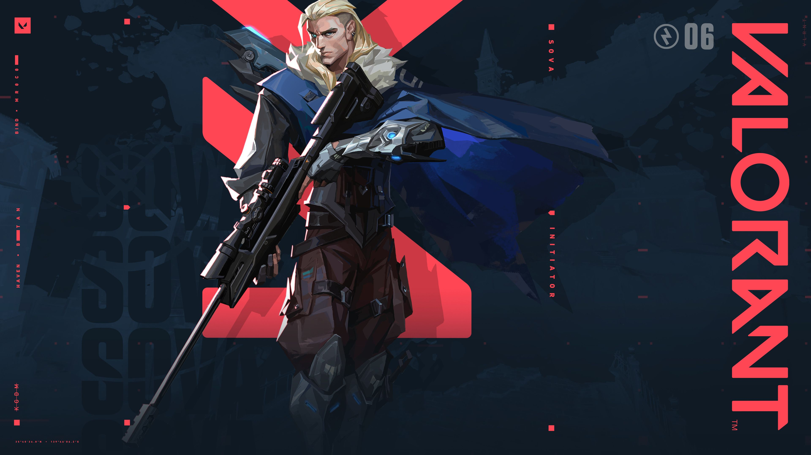
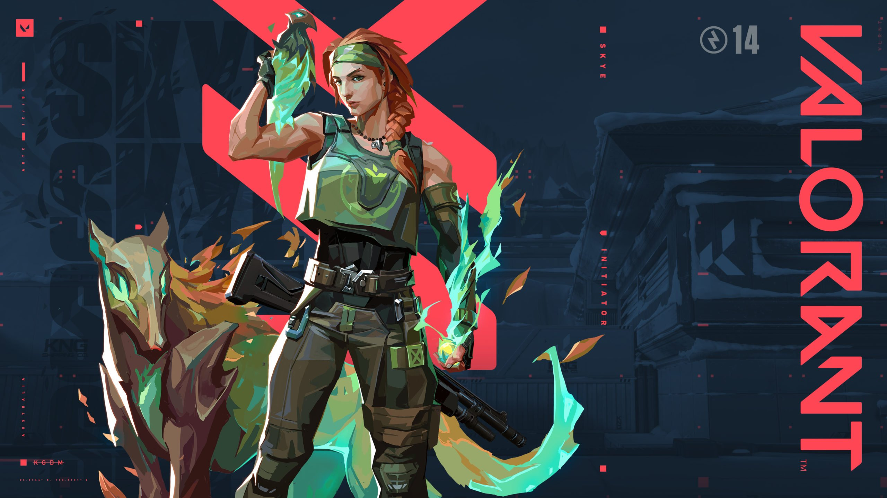
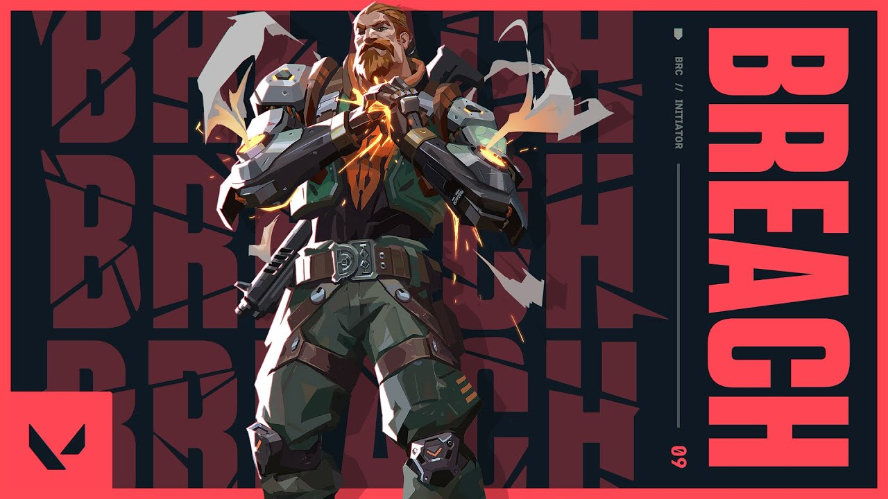
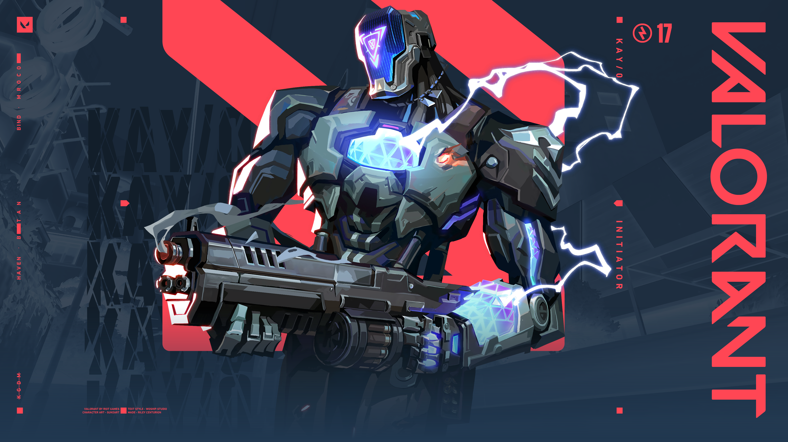

Initiators - Recon and Crowd Control
Initiators excel at gathering information and controlling the movements of opponents through the use of their abilities.There are four Initiators in VALORANT: Sova; Skye; Breach and KAY/O.
Lets see them one by one :
- Sova
Born from the eternal winter of Russia's tundra, Sova tracks, finds, and eliminates enemies with ruthless efficiency and precision. His custom bow and incredible scouting abilities ensure that even if you run, you cannot hide.

Sova's abilities are :
- Q - SHOCK BOLT
EQUIP a bow with a shock bolt. FIRE to send the explosive forward, detonating upon collision and damaging players nearby. HOLD FIRE to extend the range of the projectile. ALTERNATE FIRE to add up to two bounces to this arrow.
- E - RECON BOLT
EQUIP a bow with a recon bolt. FIRE to send the recon bolt forward, activating upon collision and revealing the location of nearby enemies caught in the line of sight of the bolt. HOLD FIRE to extend the range of the projectile. ALTERNATE FIRE to add up to two bounces to this arrow.
- C - OWL DRONE
EQUIP an owl drone. FIRE to deploy and take control of movement of the drone. While in control of the drone, FIRE to shoot a marking dart. This dart will reveal the location of any player struck by the dart.
- X - HUNTER'S FURY
EQUIP a bow with three long-range wall-piercing energy blasts. FIRE to release an energy blast in a line in front of Sova, dealing damage and revealing the location of enemies caught in the line. This ability can be RE-USED up to two more times while the ability timer is active.
- Skye
Hailing from Australia, Skye and her band of beasts trail-blaze the way through hostile territory. With her creations hampering the enemy, and her power to heal others, the team is strongest and safest by Skye's side.

Skye's abilities are :
- Q - TRAILBLAZER
EQUIP a Tasmanian tiger trinket. FIRE to send out and take control of the predator. While in control, FIRE to leap forward, exploding in a concussive blast and damaging directly hit enemies.
- E - GUIDING LIGHT
EQUIP a hawk trinket. FIRE to send it forward. HOLD FIRE to guide the hawk in the direction of your crosshair. RE-USE while the hawk is in flight to transform it into a flash that plays a hit confirm if an enemy was within range and line of sight.
- C - REGROWTH
EQUIP a healing trinket. HOLD FIRE to channel, healing allies in range and line of sight. Can be reused until her healing pool is depleted. Skye cannot heal herself.
- X - SEEKERS
EQUIP a Seeker trinket. FIRE to send out three Seekers to track down the three closest enemies. If a Seeker reaches its target, it nearsights them.
- Breach
Breach, the bionic Swede, fires powerful, targeted kinetic blasts to aggressively clear a path through enemy ground. The damage and disruption he inflicts ensures no fight is ever fair.

Breach's abilities are :
- Q - FLASHPOINT
EQUIP a blinding charge. FIRE the charge to set fast-acting burst through the wall. The charge detonates to blind all players looking at it.
- E - FAULT LINE
EQUIP a seismic blast. HOLD FIRE to increase the distance. RELEASE to set off the quake, dazing all players in its zone and in a line up to the zone.
- C - AFTERSHOCK
EQUIP a fusion charge. FIRE the charge to set a slow-acting burst through the wall. The burst does heavy damage to anyone caught in its area.
- X - ROLLING THUNDER
EQUIP a seismic charge. FIRE to send a cascading quake through all terrain in a large cone. The quake dazes and knocks up anyone caught in it.
- KAY/O
KAY/O is a machine of war built for a single purpose: neutralizing radiants. His power to suppress enemy abilities cripples his opponents' capacity to fight back, securing him and his allies the ultimate edge.

KAY/O's abilities are :
- Q - FLASH/DRIVE
EQUIP a flash grenade. FIRE to throw. The flash grenade explodes after a short fuse, blinding anyone in line of sight.
- E - ZERO/POINT
EQUIP a suppression blade. FIRE to throw. The blade sticks to the first surface it hits, winds up, and suppresses anyone in the radius of the explosion.
- C - FRAG/MENT
EQUIP an explosive fragment. FIRE to throw. The fragment sticks to the floor and explodes multiple times, dealing near lethal damage at the center with each explosion.
- X - NULL/CMD
INSTANTLY overload with polarized radianite energy that empowers KAY/O and causes large energy pulses to emit from his location. Enemies hit with these pulses are suppressed for a short duration.